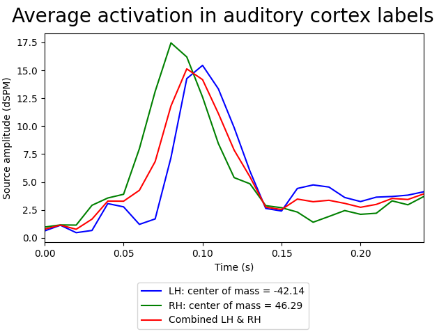

Note
Click here to download the full example code
Extracting time course from source_estimate object¶
Load a SourceEstimate object from stc files and extract the time course of activation in individual labels, as well as in a complex label formed through merging two labels.
# Author: Christian Brodbeck <christianbrodbeck@nyu.edu>
#
# License: BSD (3-clause)
import os
import mne
from mne.datasets import sample
import matplotlib.pyplot as plt
print(__doc__)
data_path = sample.data_path()
os.environ['SUBJECTS_DIR'] = data_path + '/subjects'
meg_path = data_path + '/MEG/sample'
# load the stc
stc = mne.read_source_estimate(meg_path + '/sample_audvis-meg')
# load the labels
aud_lh = mne.read_label(meg_path + '/labels/Aud-lh.label')
aud_rh = mne.read_label(meg_path + '/labels/Aud-rh.label')
# extract the time course for different labels from the stc
stc_lh = stc.in_label(aud_lh)
stc_rh = stc.in_label(aud_rh)
stc_bh = stc.in_label(aud_lh + aud_rh)
# calculate center of mass and transform to mni coordinates
vtx, _, t_lh = stc_lh.center_of_mass('sample')
mni_lh = mne.vertex_to_mni(vtx, 0, 'sample')[0]
vtx, _, t_rh = stc_rh.center_of_mass('sample')
mni_rh = mne.vertex_to_mni(vtx, 1, 'sample')[0]
# plot the activation
plt.figure()
plt.axes([.1, .275, .85, .625])
hl = plt.plot(stc.times, stc_lh.data.mean(0), 'b')[0]
hr = plt.plot(stc.times, stc_rh.data.mean(0), 'g')[0]
hb = plt.plot(stc.times, stc_bh.data.mean(0), 'r')[0]
plt.xlabel('Time (s)')
plt.ylabel('Source amplitude (dSPM)')
plt.xlim(stc.times[0], stc.times[-1])
# add a legend including center-of-mass mni coordinates to the plot
labels = ['LH: center of mass = %s' % mni_lh.round(2),
'RH: center of mass = %s' % mni_rh.round(2),
'Combined LH & RH']
plt.figlegend([hl, hr, hb], labels, 'lower center')
plt.suptitle('Average activation in auditory cortex labels', fontsize=20)
plt.show()
Total running time of the script: ( 0 minutes 2.488 seconds)
Estimated memory usage: 8 MB